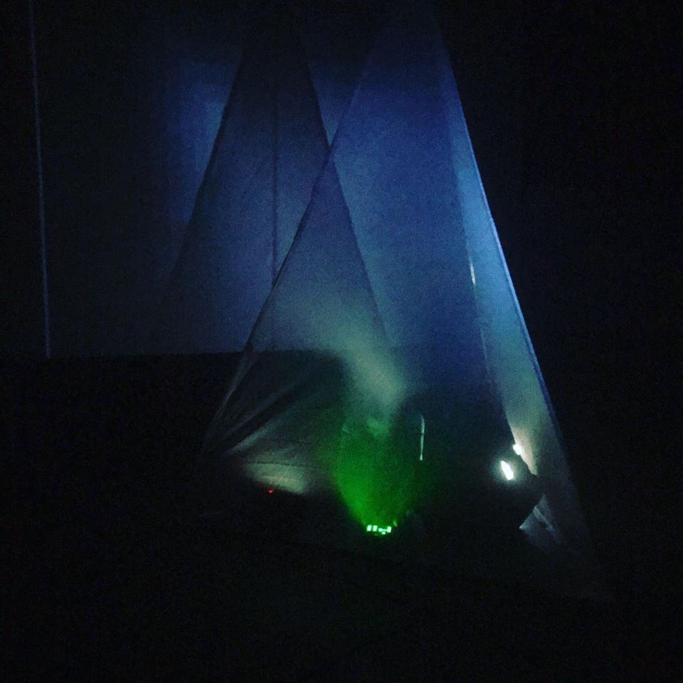
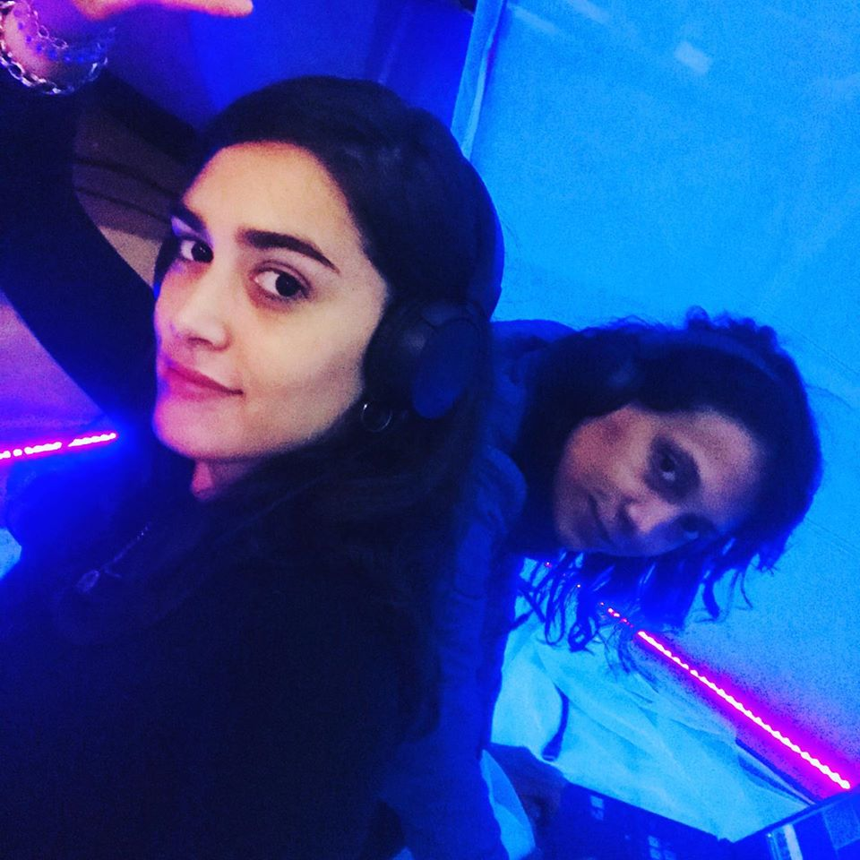
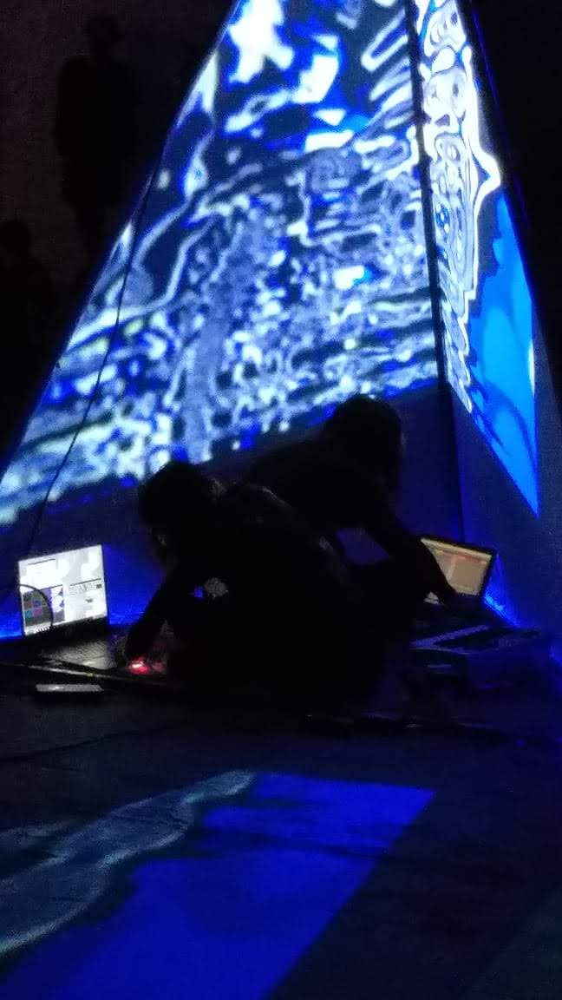

Es un volumen amorfo, un escultura que reacciona a la presencia y al contacto generando vibración que se procesa y traduce en sonido.
Astrolabius °
PROYECTOS

Hay un diálogo entre la escultura (que genéra su propio discurso) y la mano que la explora. Dos materiales
se encuentran y se cruzan entre sí; ¿En ese momento, es posible discernir dónde empieza uno y términa
el otro? ¿Cuando tocamos, estamos realmente tocando o estamos palpando? ¿ Qué es palpar? ¿ Qué
es tocar? ¿ Cómo se involucran los demás sentidos con el tocar? Tocamos y vibramos, este fenómeno
físico es sonido; Incluso si estas vibraciones son inaudibles, no son imperceptibles o intraducibles, el sonido es energía
exitación de un material por otro. ¿En el acto de tocar, estamos escuchando ?
Tocar y escuchar son actos que se nutren, se expanden y se fusionan. Esa vibracín se proyecta en el espacio, se traslada
al objeto y viceversa. La materialidad elegida, intenta desequilibrar la noción de superficie, generando con ese material,
flexible, maleable, dócil, la experimentación del cruce, el cruce como un viaje, como un camino de aprendizaje, de dinamismo
que es generado por el contacto, el movimiento, la agitación.
"In absentia" es un término utilizado en derecho procesal, para designar un juicio sin la presencia del acusado.
La obra es un live set/performance audiovisual, donde sonido, imagen y luz se conjugan con la idea de enfatizar
y reflexionar acerca de la la problemática que genera el recorte/invisivilización de los aportes
intelectuales, estéticos, artísticos, sociales, técnicos, etc, de las mujeres
a lo largo de la historia y dentro del campo artístico.
La duración total es de aproximadamente 20 minutos (es variable), y está compuesta por dos momentos
rítmicos diferentes.
Utilizando el tetraedro, uno de los 5 sólidos platónicos que en geometría sagrada representa el primer elemento que da origen a la sabiduría y la justicia, agregamos como elemento simbólico personal la idea de un portal que nos comunica con nuestras hermanas artistas. A nivel audiovisual en algunas partes del set, hacemos pequeños homenajes utilizando recursos estéticos tanto visuales como sonorosde algunas de estas artistas como tributo.



Live set Audiovisual, imagen digital construida en Touchdesigner y vdmx y sonido construido con síntesis y grabaciones de campo en Ableton Live.
Instalación Audiovisual Estereoscópica. ( ver con anteojos 3d )
Presentada en el marco del festival E-WASTE de la UNA en Agosto 2018 Buenos Aires.
La idea de partir de un elemento simple en este caso la línea, que sumada a otras pasa de ser unidad para convertirse en conjunto y de esta manera en fuerza, una fuerza capaz de transformar y de transformarse, así se nos presenta el segundo factor, que es la alteración del estado de la materia, donde en estos cambios de estado, ya la percepción no es la de entidades que hacen parte de un conjunto, sino como una unidad, un todo.